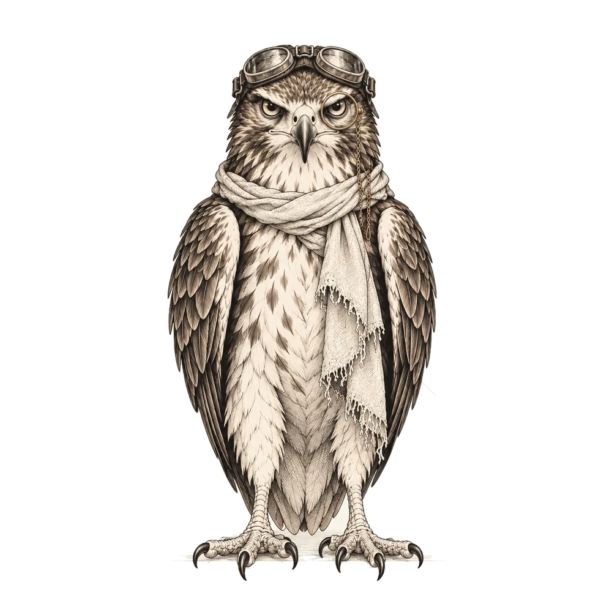

Beginner · ~8 minutes
What is an AI agent?
turns into a working system.observe → decide → tool → result

By the end of this deck you will know the difference between a chatbot and an agent, see how an agent "thinks and gets the work done," and try one yourself.
Move forward with the → key, the buttons below, or by swiping left on a phone.
1 · What you already know
Chatbot: you ask, it answers
When you chat with ChatGPT or Claude, the AI produces text. However smart it is, you are still the one doing the work: you copy the code, open the file, and check the result.
Model (LLM): A program trained on a huge amount of text that produces answers by predicting the next word. Claude and GPT are models.
2 · The difference
Agent: it does the work itself
$ waiting for a task…
This is a demonstration simulation; no real files are changed.
chatbot
"How do I fix the bug in this file?" → It writes you an explanation and example code. The rest is up to you.
agent
"Fix the bug in this file." → It opens the file itself, finds the bug, fixes it, runs the test, and tells you what it did.
What makes the difference is tools: small abilities that let the agent read files, run commands, and search the internet.
3 · The agent loop
Look → decide → do → check
An agent repeats these four steps over and over until the job is done. The loop runs by itself; you can also pause it and watch step by step:
Task: "Fix the broken link on the page."
4 · Check
Did you get it?
What is the most important thing that separates an agent from a chatbot?
Length and internet access are not what makes the difference. What makes an agent an agent is that it uses tools and keeps the loop going until the job is done.

5 · A real example
Claude Code: an agent that runs in the terminal
Claude Code is an agent that can read and write files and run commands in the project folder on your computer. You tell it "do this," and it runs the loop itself.
There is one problem: when a job takes long, you keep looking at the terminal asking "is it done?" I made claude-done-pixel for that. When Claude finishes its job, a pixel character runs and jumps in the corner of the screen and waves a green flag.
claude-done-pixel: in the corner of the screen when the job is done
How it works is in the next deck: Automation with a Claude Code hook →
6 · An important rule
The final decision is the human's
An agent is fast but can be wrong. In a well-built system:
- The agent tells you what it did; you read it.
- Before anything that can't be undone (deleting something, publishing, spending money), it asks permission.
- It shows the work is correct with a test instead of settling for saying "done."
Using AI well is not leaving everything to it; it is knowing what to leave to it.
7 · Try it yourself
Your first task
Open a free AI chat (Claude, ChatGPT…) and paste the text below. Even though it is a chatbot, you will have taught it to think step by step like an agent:
Work like an agent. Task: put together my weekly meal plan and grocery list. First ask me the 3 questions you need answered (look). Based on my answers, make a plan and show it to me (decide). Write the list (do). Finally, compare the list against your own plan and check whether anything is missing (check).
Did you notice? You described the four steps of the loop yourself. Real agents do this on their own, with tools.
Done
What's next?
- Automation with a Claude Code hook: running something automatically when an agent finishes.
- How I built SkyTrack with AI: how a real app was written with AI.
- Projects · Contact: write to me with your questions.